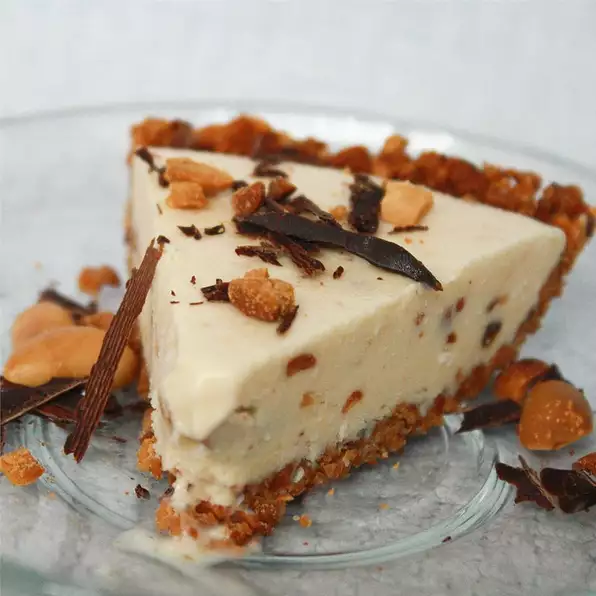

Peanutty Ice Cream Pie

Description
A great party pie! Top with M&Ms®, sprinkles, toasted coconut, or chocolate shavings before serving.
Ingredients
- 1 ⅓ cups finely chopped peanuts
- 3 tablespoons margarine, melted
- 2 tablespoons white sugar
- ¼ cup peanut butter
- ¼ cup light corn syrup
- ¼ cup flaked coconut
- 3 tablespoons chopped peanuts
- 1 quart vanilla ice cream, softened
- ¼ cup mini candy-coated chocolate pieces (Optional)
Steps
- Combine the peanuts, butter and sugar; press onto the bottom and up the sides of a greased 9-inch pie plate.
Cover and refrigerate for 15 minutes.
- In a large bowl, combine peanut butter and corn syrup. Add coconut and peanuts. Stir in ice cream just until
combined. Spoon into crust.
- Cover and freeze overnight or until firm. Just before serving, sprinkle with mini candy-coated chocolate
pieces, if desired.